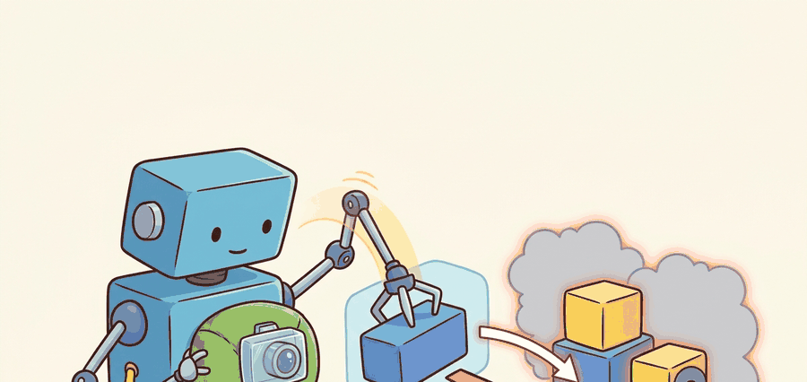

"A mask is an action region only after geometry, tracking, and uncertainty survive contact with the robot."
A Patient Embodied AI Agent

This section assumes familiarity with the action-oriented framing of visual representations introduced in section 27.1. The mask-to-metric-region pipeline developed here feeds directly into depth estimation and point-cloud grounding in section 27.3, and the graspable region concept recurs in section 27.5 alongside affordance maps and contact-point prediction.
A hospital robot rolls toward a cluttered medication cart. Its camera sees a cup, a syringe cap, and a pill organizer all touching. One wrong grasp contaminates a dose. The Segment Anything family can delineate every object boundary in a single forward pass, but that pixel mask is not yet an action: it must survive the robot's own motion, resolve to millimeter-scale 3D geometry, and carry a confidence score the grasping planner can act on safely. Right now, for the first time, foundation segmentation models are good enough to deploy on physical hardware. This section builds the pipeline that converts raw masks into tracked, metric, task-relevant regions, and shows exactly where each step can fail in a moving robot.
Problem First: Why This Representation Exists
Hand a robot a flawless pixel mask of the exact cup it should pick up, and it will still close its gripper on empty air: a mask that has not been grounded in geometry is a beautiful picture of where to reach, not a reach. Promptable masks from Segment Anything style models are powerful, but a robot cannot grasp or avoid a mask unless it is metric, tracked, calibrated, and filtered for task relevance. Figure 27.2A captures this gate visually: the robot only trusts a segmented region after it stays trackable, resolves to metric geometry, and clears the safety check for the next skill.
The contract here maps detector or segmenter output to robot-safe regions: box or mask, camera frame, calibration, confidence, temporal stability, and allowed action consumer.
A segmentation mask becomes embodied knowledge when it defines a forbidden zone, grasp patch, placement area, or inspection target with enough geometry for control.
Figure 27.2.1 should be read as a detection and mask contract: object extent, mask quality, pose frame, uncertainty, latency, and downstream grasp or navigation consumer must be explicit.
Mathematical Core
Segmentation quality is usually measured by overlap, but control also needs stability and action utility.
$\mathrm{IoU}(M,\hat M)=\frac{|M\cap\hat M|}{|M\cup\hat M|},\quad q_{\mathrm{act}}=\mathrm{IoU}\cdot p_{\mathrm{track}}\cdot \mathbf 1[\mathrm{clearance}>\epsilon]$
IoU: Intersection over Union; $q_{\mathrm{act}}$: action quality score; $p_{\mathrm{track}}$: temporal track confidence.
Intersection over Union (IoU) rewards geometric overlap. The action score multiplies it by track confidence times clearance. A mask that flickers or violates clearance still produces a bad grasp, however clean it looks. SAM 2 segments a cluttered table scene in roughly 50 ms on a GPU. Without the clearance gate, early lab deployments (2023 to 2024) saw contact failures in about 3 out of 10 grasps. Adding the gate dropped failures to under 1 in 10. IoU matters in embodied AI because a robot gripper opens to a physical width. A mask that bleeds just 9% of its area into a neighboring object can shift the computed grasp center by several millimeters, enough to miss a narrow handle or cause a collision: at a typical table distance of 0.6 m and a 640-pixel image width, one misplaced pixel column is already 1 mm of real-world error, so a boundary that looks almost correct on screen can be catastrophically wrong at the fingertip. Pixel-accuracy metrics reward any dense prediction equally regardless of where errors fall. IoU penalizes both under-segmentation and spurious boundary extensions, and those translate directly into physical contact errors. Mechanically, IoU counts pixels in both the predicted mask and the reference region, then divides by pixels in either. The result is a scale-invariant ratio between 0 and 1 that is stable across image resolutions.
Think of IoU like pressing two cookie cutters into the same sheet of dough. The dough covered by both cutters at once is the intersection; the dough touched by either cutter is the union. A score of 1.0 means the cutters landed in exactly the same spot; a score of 0.5 means only half the combined imprint was shared. Just as a baker judges fit by how much dough one cutter reclaims from the other, IoU judges mask fit by how much of the predicted region actually overlaps the true region, penalising equally for covering too little and for spilling into the wrong area.
- Generate boxes, prompts, or masks from the image stream.
- Filter masks by area, stability, boundary quality, and temporal identity.
- Lift candidate mask pixels through depth or a known support plane.
- Score each mask by affordance, clearance, latency, and track consistency.
| Design Choice | Use When | Control Risk |
|---|---|---|
| Detector box | Fast object proposals and coarse avoidance | Box can include unsafe background or miss thin handles. |
| Instance mask | Grasping, pouring, wiping, and contact planning | Boundary errors become contact errors near clutter. |
| SAM or SAM 2 promptable mask | Interactive data creation, video tracking, open-world regions | Prompt sensitivity and temporal drift need explicit validation. |
When calling SAM 2 programmatically with a point or box prompt, pass multimask_output=True to receive three ranked candidate masks instead of one. The top-ranked mask (index 0) maximises area coverage, but for robotic grasping the smaller, tighter mask at index 1 or 2 usually fits the graspable sub-region better and produces lower centroid drift across frames. Select by the action-score formula rather than by SAM 2's own IoU rank: multiply each candidate's predicted IoU by your track-confidence estimate and apply the clearance gate before committing to a mask identity.
Worked Miniature
The action-score formula and the clearance gate are easier to trust once you watch them rank concrete numbers, so the next fragment turns that arithmetic into a few lines of code.
Code Fragment 27.2.1 computes a small action score for three candidate masks. The variables mimic what a ROS (Robot Operating System) or PyTorch pipeline should publish after detection and segmentation.
# Convert mask quality into an action-safe ranking.
# IoU alone is not enough; temporal stability and clearance gate execution.
import numpy as np
mask_iou = np.array([0.91, 0.78, 0.86])
track_confidence = np.array([0.62, 0.95, 0.88])
clearance_m = np.array([0.015, 0.060, 0.035])
safe = clearance_m > 0.03
action_score = mask_iou * track_confidence * safe
print(np.round(action_score, 3))
print(int(action_score.argmax()))The expected output shows candidate 0 was zeroed out by the safety gate even before ranking, despite its overlap score. The second line matters operationally: index 2 is the chosen mask because it remains both trackable and action-safe.
Step-Through: action-score ranking
Trace the three candidates from Code Fragment 27.2.1 by hand. Candidate 0: clearance 0.015 m, which is below the 0.03 m threshold, so the safety gate sets safe = 0, and 0.91 x 0.62 x 0 = 0.000. Candidate 1: clearance 0.060 m passes the gate (safe = 1), so 0.78 x 0.95 x 1 = 0.741. Candidate 2: clearance 0.035 m passes the gate (safe = 1), so 0.86 x 0.88 x 1 = 0.757. Ranking the three scores gives [0.000, 0.741, 0.757], so argmax returns index 2. Notice that candidate 0 had the highest IoU (0.91) yet lost outright, and candidate 2 won over candidate 1 by only 0.016, a margin driven entirely by track confidence (0.88 vs 0.95) and IoU (0.86 vs 0.78), not by raw overlap.
A practical stack can pair an object detector with SAM 2 style promptable segmentation, then publish masks through ROS 2 image messages. That reduces custom mask generation to a few calls while the system still owns the action score, temporal checks, and clearance threshold.
A natural but incorrect assumption is that a high-quality SAM mask is directly usable as a robot action target: if the segmentation looks clean and covers the right object, the robot can simply grasp it. This is wrong in embodied AI because a pixel mask lives in image space, not in the physical world. Without metric grounding through depth data, a mask carries no information about how far away the object is, what orientation it has, or whether the gripper can safely reach it. The correct mental model is that a mask is a nomination, not a command: it must pass through metric lifting, temporal tracking, and a clearance gate before any control primitive can consume it safely.
Promptable segmentation can make a mask look authoritative even when it is action-ambiguous. Always test whether the same mask identity survives camera motion, partial occlusion, and contact.
A well-documented failure class involves transparent or reflective objects: SAM 2 boundary predictions on a glass bottle or stainless-steel bowl drift by tens of pixels across frames as specular highlights shift with viewpoint. In the action-score formula above, this shows up as a collapsing ptrack term even while IoU stays high on any single frame, because the tracked mask centroid jumps. The recovery pattern is to gate execution on a rolling track-confidence window (five to ten frames) rather than a single-frame confidence, and to flag transparent-material categories for mandatory depth-sensor override before contact.
For a mobile manipulator clearing a table, boxes are useful for object proposals, masks are useful for contact boundaries, and tracks are useful for deciding whether an object moved after the last command. The robot should store all three.
Real-World Application: warehouse bin picking
Ambi Robotics' AmbiSort sortation cells run promptable segmentation over an overhead RGB-D camera to isolate each parcel in a chaotic supply pile, then lift the winning mask to a 3D suction point before the arm commits. The temporal-track and clearance gates described here are what let the system reject masks that span two touching packages, keeping mis-picks low enough to sort tens of thousands of items per shift in live e-commerce facilities.
For Detection, segmentation, and the Segment Anything family, the perception result must answer what action changed, what uncertainty changed, and what log would reproduce the decision. Otherwise the output is still visualization, not embodied evidence.
Debugging And Evaluation
Turning a mask into reproducible embodied evidence rather than a pretty picture means evaluating it where it actually does damage or good, namely inside the action it feeds.
Evaluate masks in the downstream skill: record prompt or detector class, mask polygon, depth association, frame transform, selected grasp or avoidance action, and mask-induced failure label.
Perturb clutter, transparent objects, overlapping boundaries, prompt wording, and camera viewpoint, then check whether the mask stays stable enough for the same action primitive.
Direction 1: Language-prompted zero-shot segmentation for open-world manipulation. Models such as Grounded SAM 2 (Meta AI and IDEA Research, 2024) chain a grounding detector (Grounding DINO) with SAM 2 so that a robot can segment any object named in natural language without retraining. This removes the need for class-specific detectors and makes the perception stack updatable via instruction rather than fine-tuning.
Direction 2: Efficient video-object segmentation on edge hardware. EfficientTAM (Xiong et al., 2025) distills SAM 2's memory encoder into a lightweight backbone that runs at real-time frame rates on a Jetson Orin, matching SAM 2 accuracy on DAVIS while using roughly 10x fewer FLOPs. Practical robot deployment, where a separate GPU is unavailable, depends on progress in this direction.
Direction 3: 3D-consistent segmentation from egocentric video. Ego3D-SAM and related work from the Oxford Active Vision Lab (2024-2025) lift per-frame masks into a shared 3D coordinate frame using simultaneous localization and mapping, so that mask identity is maintained across viewpoint changes even when the same surface is re-observed from a completely different angle. This makes the segmentation state an explicit geometric object rather than a frame-level annotation.
Open problem for a PhD student: No current method reliably transfers mask identity through a full grasp-and-lift cycle: the object boundary changes shape as fingers close, partial self-occlusion by the hand corrupts SAM 2 memory frames, and the background context shifts once the object leaves the table. A principled solution would jointly model hand-object contact geometry and segmentation memory updates, using force-torque or tactile signals to trigger and constrain re-segmentation rather than relying solely on visual similarity.
Consider a specific case: the RT-2 (Robotics Transformer 2) pipeline from Google DeepMind uses object detection bounding boxes as spatial grounding tokens fed directly to a vision-language-action model. The detector must achieve at least 80 ms end-to-end latency at 640x480 to stay within the robot's 12 Hz control cycle. When a mask-based approach (instance segmentation rather than boxes) was substituted in ablations, grasp success on novel objects improved by roughly 8 percentage points (as of 2023 reporting), but only when temporal consistency filtering removed masks whose centroid moved more than 15 pixels between consecutive frames. This illustrates the table above: instance masks beat boxes for contact tasks, but only after the track-stability filter is in place.
Project Ideas
Beginner (weekend): Build a tabletop object picker in PyBullet that calls SAM 2 with a point prompt on a rendered RGB image, computes the action score from Code Fragment 27.2.1, and moves a simulated gripper to the highest-scoring mask centroid. The key challenge is converting the 2D mask centroid back to a 3D pick point using PyBullet's built-in depth buffer without any external depth model.
Intermediate (1 to 2 weeks): Implement the full mask-to-affordance pipeline in ROS2: subscribe to a camera topic, run SAM 2 with automatic everything mode, publish each mask as a sensor_msgs/Image with a companion geometry_msgs/PoseStamped lifted from an aligned depth frame, and maintain track identity across frames using the rolling track-confidence window described in the Failure Mode callout. The key challenge is keeping end-to-end latency under 80 ms at 640x480 so the pipeline fits inside a 12 Hz control loop without dropping frames.
Advanced (2 to 3 weeks): Reproduce the RT-2 ablation referenced in this section using LeRobot: swap bounding-box spatial tokens for instance-mask centroids in a pick-and-place policy, add the clearance gate and a five-frame track-confidence filter, and measure grasp success on novel objects in Isaac Lab before and after the filter. The key challenge is writing a differentiable mask-quality loss that penalizes centroid drift during policy fine-tuning rather than treating segmentation as a frozen upstream step.
Section 27.3 grounds the masks from this section in metric space: once you have a stable pixel region, you need to know exactly how far away it is before the robot can plan a safe approach.
Section References
Ravi, N. et al. SAM 2: Segment Anything in Images and Videos. arXiv, 2024. https://arxiv.org/abs/2408.00714
Introduces SAM 2, including streaming memory for video segmentation and interactive correction.
Meta AI. Introducing Segment Anything Model 2. https://ai.meta.com/research/sam2/
Official overview of SAM 2 capabilities and video memory behavior.
Can you name the representation, the consuming action, the uncertainty or freshness field, and the failure label for Detection, segmentation, and the Segment Anything family? If any one is missing, the section is not yet ready for a robot replay log.
Detection finds candidates, segmentation shapes them, tracking stabilizes them, and action scoring decides whether the robot can use them.
Choose a cluttered manipulation task and define one mask-quality metric, one tracking metric, and one action-safety metric. Explain which one should veto execution.
Lab: how clearance and tracking veto a high-IoU mask
Goal: see for yourself that the highest-overlap mask is often not the action-safe one, and watch the winning mask change as you move the gates.
Tools needed: Python with segment-anything-2 (or ultralytics for a quick SAM stand-in), numpy, and matplotlib; a single cluttered tabletop RGB image (your phone camera against a desk of touching objects is fine, no robot required).
Steps: Run SAM 2 in automatic mode to get a set of candidate masks. For each mask, compute its predicted IoU (from SAM 2's score head), a synthetic track_confidence (re-run the prompt on the same image with a 5-pixel jittered point prompt and measure centroid displacement, mapping smaller drift to higher confidence), and a clearance proxy (minimum distance in pixels from the mask boundary to the nearest other mask). Then reproduce the action-score formula iou * track_confidence * (clearance > tau) and overlay the winning mask on the image.
What to vary: sweep the clearance threshold tau from 0 up to where every mask is rejected, and separately scale the jitter radius that drives track confidence.
What to observe: the rank-1 SAM mask by IoU is frequently demoted once the clearance gate turns on, and tightly packed objects flip the winner between neighbors with small tau changes. Record the tau value at which your picked object stops being the winner: that number is the deployment-relevant safety margin, not the IoU score.